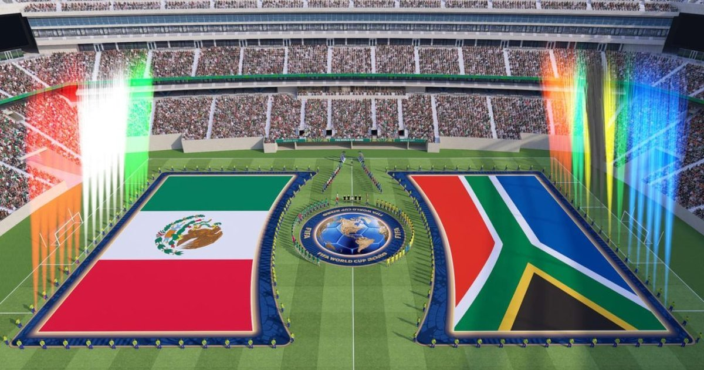

Imagen: FIFA
Ex colaborador de CIPMEX
Este jueves 11 de junio, México jugó el partido inaugural de la Copa del Mundo y, para una parte del país, pareció que el tiempo se detuvo durante 90 minutos. Miles de mexicanos interrumpieron sus actividades, se reunieron frente a una cancha o una pantalla y compartieron la emoción de apoyar a un mismo equipo.
El fútbol logró producir, al menos por un instante, una sensación de pertenencia colectiva en un país marcado por profundas divisiones.
Esta no fue la realidad de todos los mexicanos. Mientras unos celebraban los goles y se abrazaban con desconocidos, otros continuaban trabajando, protestando, buscando a sus familiares desaparecidos o enfrentando los mismos problemas del día a día. El partido pudo detener el tiempo para algunos, pero no detuvo la realidad del país.
Una semana antes, distintos grupos y colectivos llegaron a la ciudad desde otros estados para protestar en contra de la inacción del Estado, la violencia y las injusticias en las políticas públicas del gobierno. Entre ellos estaban campesinos, transportistas, pensionados de Pemex y de la CFE, trabajadores del sector salud y maestros de la CNTE.
Sus demandas no desaparecieron cuando empezó el partido. Durante la inauguración, muchos de ellos siguieron protestando. Miles de personas se preparaban para ver el partido, mientras que los maestros de la CNTE marcharon hacia el estadio y distintos colectivos exigieron respuestas por parte de las autoridades. Al mismo tiempo, madres buscadoras se manifestaban en el Ángel de la Independencia y cerca del estadio pidiendo el regreso de sus hijos. (Simón 2026)
A lo largo de la historia, los grandes eventos deportivos han sido utilizados para proyectar una imagen de unidad, estabilidad y normalidad, aun cuando dentro del país se viven conflictos y violaciones a los derechos humanos. La masacre de Tlatelolco el 2 de octubre de 1968, diez días antes de la inauguración de los Juegos Olímpicos; el Mundial de Argentina de 1978: mientras los estadios se llenaban de fútbol, la dictadura militar avanzaba persiguiendo, torturando y desapareciendo personas.
El fútbol puede crear un sentido de colectividad. Es capaz de abrir conversaciones y hacer que personas con ideas y realidades diferentes se sientan parte de un mismo equipo. Fueron 90 minutos de alegría para quienes pudieron verlo y disfrutarlo.
Sin embargo, esos 90 minutos también dejan una pregunta incómoda. Si fuimos capaces de sentirnos parte de una misma comunidad mientras nuestra selección jugaba, ¿por qué resulta tan difícil reconocer como parte de esa misma comunidad a quien protesta y exige justicia? El fútbol no resuelve los conflictos del país ni construye paz por sí solo, pero sí demuestra nuestra capacidad de generar identidades compartidas y de movilizarnos alrededor de causas comunes.
El reto consiste en ampliar los límites de esa comunidad imaginada. Que la empatía que sentimos por once jugadores pueda extenderse hacia quienes viven realidades distintas. Porque mientras algunos celebraban una fiesta nacional, otros siguen recordándonos que hay conflictos que no se suspenden con el silbatazo inicial ni terminan con el final del partido.
CIPMEX · Centro de Investigación para la Paz México, A.C. · Paz que se piensa, paz que se construye